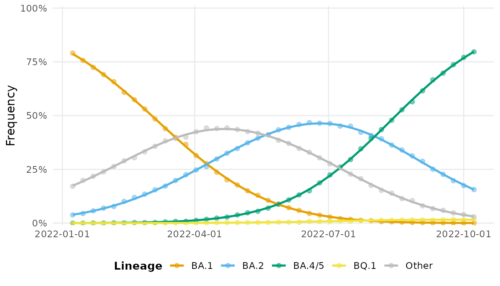
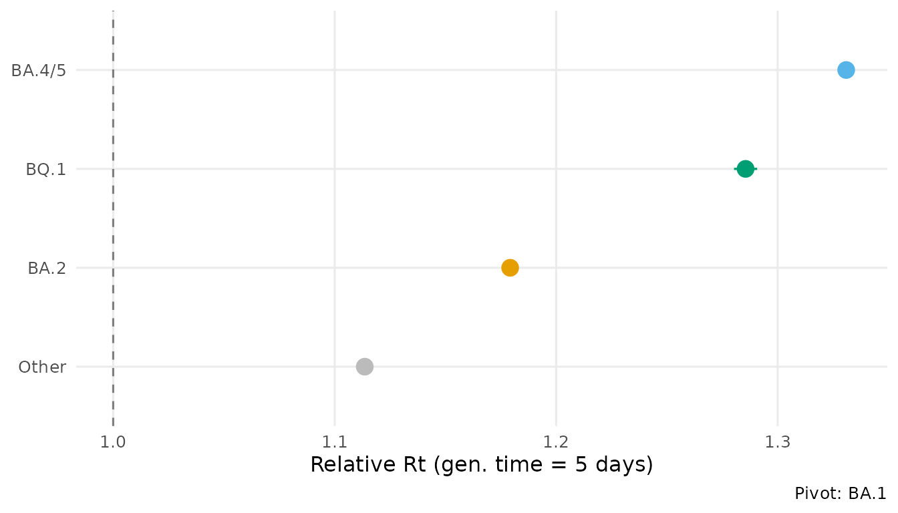
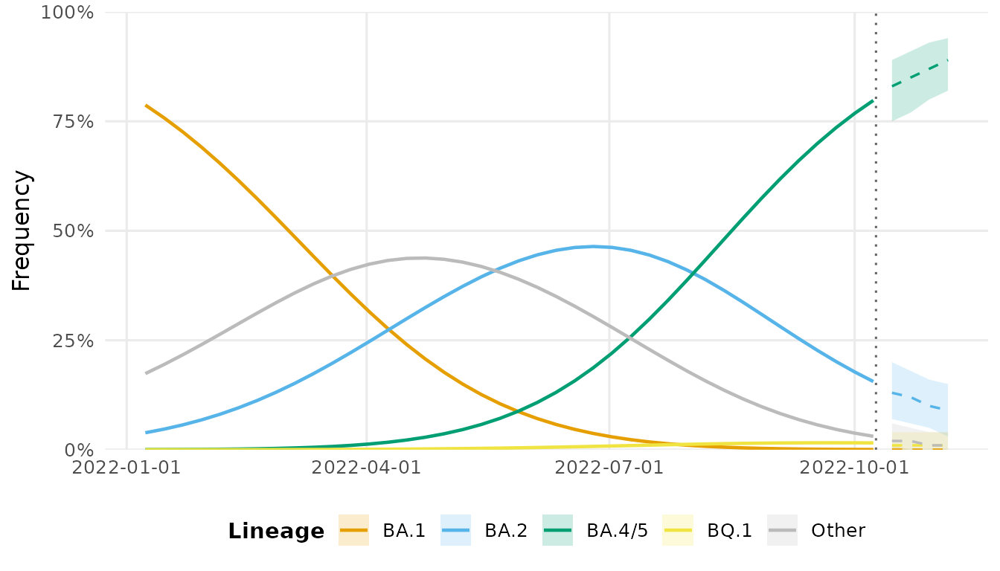

Overview
lineagefreq models pathogen lineage frequency dynamics from genomic surveillance count data. Given a table of lineage-resolved sequence counts over time, the package estimates relative growth advantages, generates short-term frequency forecasts, and provides tools for evaluating model accuracy.
This vignette demonstrates the core workflow using simulated SARS-CoV-2 surveillance data.
Preparing data
The entry point is lfq_data(), which validates and
standardizes a count table. The minimum input is a data frame with
columns for date, lineage name, and sequence count.
library(lineagefreq)
data(sarscov2_us_2022)
head(sarscov2_us_2022)
#> date variant count total
#> 1 2022-01-08 BA.1 11802 14929
#> 2 2022-01-08 BA.2 565 14929
#> 3 2022-01-08 BA.4/5 4 14929
#> 4 2022-01-08 BQ.1 0 14929
#> 5 2022-01-08 Other 2558 14929
#> 6 2022-01-15 BA.1 10342 13672
x <- lfq_data(sarscov2_us_2022,
lineage = variant,
date = date,
count = count,
total = total)
x
#>
#> ── Lineage frequency data
#> 5 lineages, 40 time points
#> Date range: 2022-01-08 to 2022-10-08
#> Lineages: "BA.1, BA.2, BA.4/5, BQ.1, Other"
#>
#> # A tibble: 200 × 7
#> .date .lineage .count total .total .freq .reliable
#> * <date> <chr> <int> <int> <int> <dbl> <lgl>
#> 1 2022-01-08 BA.1 11802 14929 14929 0.791 TRUE
#> 2 2022-01-08 BA.2 565 14929 14929 0.0378 TRUE
#> 3 2022-01-08 BA.4/5 4 14929 14929 0.000268 TRUE
#> 4 2022-01-08 BQ.1 0 14929 14929 0 TRUE
#> 5 2022-01-08 Other 2558 14929 14929 0.171 TRUE
#> 6 2022-01-15 BA.1 10342 13672 13672 0.756 TRUE
#> 7 2022-01-15 BA.2 608 13672 13672 0.0445 TRUE
#> 8 2022-01-15 BA.4/5 3 13672 13672 0.000219 TRUE
#> 9 2022-01-15 BQ.1 0 13672 13672 0 TRUE
#> 10 2022-01-15 Other 2719 13672 13672 0.199 TRUE
#> # ℹ 190 more rowsThe function computes frequencies, flags low-count time points, and
returns a validated lfq_data object.
Fitting a model
fit_model() provides a unified interface. The default
engine is multinomial logistic regression (MLR).
fit <- fit_model(x, engine = "mlr")
fit
#> Lineage frequency model (mlr)
#> 5 lineages, 40 time points
#> Date range: 2022-01-08 to 2022-10-08
#> Pivot: "BA.1"
#>
#> Growth rates (per 7-day unit):
#> ↑ BA.2: 0.2308
#> ↑ BA.4/5: 0.4002
#> ↑ BQ.1: 0.3516
#> ↑ Other: 0.1506
#>
#> AIC: 9e+05; BIC: 9e+05The print output shows each lineage’s estimated growth rate relative to the pivot (reference) lineage, which is auto-selected as the most prevalent lineage early in the time series.
Extracting growth advantages
growth_advantage() converts growth rates into
interpretable metrics. Four output types are available.
ga <- growth_advantage(fit,
type = "relative_Rt",
generation_time = 5)
ga
#> # A tibble: 5 × 6
#> lineage estimate lower upper type pivot
#> <chr> <dbl> <dbl> <dbl> <chr> <chr>
#> 1 BA.1 1 1 1 relative_Rt BA.1
#> 2 BA.2 1.18 1.18 1.18 relative_Rt BA.1
#> 3 BA.4/5 1.33 1.33 1.33 relative_Rt BA.1
#> 4 BQ.1 1.29 1.28 1.29 relative_Rt BA.1
#> 5 Other 1.11 1.11 1.11 relative_Rt BA.1A relative Rt above 1 indicates a lineage growing faster than the reference. The confidence intervals are derived from the Fisher information matrix.
Visualizing the fit
autoplot() supports four plot types for fitted
models.
autoplot(fit, type = "frequency")
autoplot(fit, type = "advantage", generation_time = 5)
Forecasting
forecast() projects frequencies forward with uncertainty
quantified by parametric simulation.
fc <- forecast(fit, horizon = 28)
autoplot(fc)
#> Warning in ggplot2::scale_x_date(date_labels = "%Y-%m-%d"): A <numeric> value was passed to a Date scale.
#> ℹ The value was converted to a <Date> object.
Detecting emerging lineages
summarize_emerging() tests each lineage for
statistically significant frequency increases.
summarize_emerging(x)
#> # A tibble: 4 × 10
#> lineage first_seen last_seen n_timepoints current_freq growth_rate p_value
#> <chr> <date> <date> <int> <dbl> <dbl> <dbl>
#> 1 BA.2 2022-01-08 2022-10-08 40 0.156 0.00476 0
#> 2 BA.4/5 2022-01-08 2022-10-08 40 0.797 0.0293 0
#> 3 BQ.1 2022-01-08 2022-10-08 40 0.0176 0.0143 0
#> 4 Other 2022-01-08 2022-10-08 40 0.0293 -0.00489 0
#> # ℹ 3 more variables: p_adjusted <dbl>, significant <lgl>, direction <chr>Next steps
- Compare multiple engines with
backtest()— seevignette("model-comparison"). - Run a full surveillance workflow — see
vignette("surveillance-workflow").